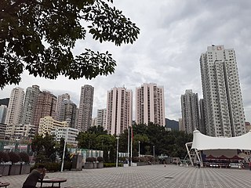

Public facilities in Wong Tai Sin
As a major residential area, Wong Tai Sin comprises a lot of different public facilities.
While some of them are provided by the government, many others (e.g. schools) are operated by non-governmental organizations. In the railway case, it is managed by a public listed company, Mass Transit Railway Corporation (MTRC).
This mode of engaging non-public sector to provide public services started to develop when the Hong Kong government expanded its social policies and infarstructure, particularly after the 1967 Riots. It is believed that this service provision mode can lighten the burden of the government e.g. the government does not need to expand the size of the civil service.
Visit the pages below to get a bit more information about them.

Photo credit: Wikimedia Commons, Fraxaer SI38F8